The Analysis of the Variance Tool will perform two standard inference procedures for the population variance or standard deviation of the population from which the given one variable data set has been drawn.
The first procedure is to construct a confidence interval for the population variance from the sample standard deviation of the given one variable data set. Finding a confidence interval for a population variance is equivalent to finding a confidence interval for the population standard deviation and the output box will give confidence intervals for both. If the sample size is over 30 a large sample procedure will be used and for a sample size under 30 a small sample procedure will be employed.
The second procedure is to evaluate a hypothesis test testing a user supplied null hypothesis ( given in the form of a target variance or standard deviaiton) against a user supplied alternative hypothesis. The P-value of the given data (see below) will be computed and the output box will indicate whether the results are significant relative to a user supplied level of significance. As with the confidence interval procedure if the sample size is over 30 a large sample procedure will be used and for a sample size under 30 a small sample procedure will be employed.
Estimates in statistics are most often expressed in terms of confidence intervals. Roughly these are intervals of numbers with confidence levels attached indicating the probability that what is being estimated actually falls within the interval. A formal definiiton is presented below. First we give a discussion of the estimation procedure in general.
In most
standard statistical analyses the parameters that are of most interest are means, 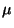, standard deviations or variances,  or
or  and proportions
and proportions  . Eachof
these has a fairly standard statistic that is used to estimate it. For means we have
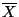, the sample mean; for standard deviations, 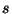, the sample standard deviation; and for
proportions
. Eachof
these has a fairly standard statistic that is used to estimate it. For means we have
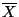, the sample mean; for standard deviations, 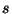, the sample standard deviation; and for
proportions  , the sample proportion
, the sample proportion
 , where
, where  is the number of items observed
and
is the number of items observed
and  is the number of items observed of the characteristic of interest. Each of these
statistics is called an estimator for the corresponding parameter; hence
is the number of items observed of the characteristic of interest. Each of these
statistics is called an estimator for the corresponding parameter; hence
 is an
estimator for , is an estimator for
is an
estimator for , is an estimator for  and
and  is an estimator for
is an estimator for  . In general
if 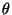 (theta) stands for a parameter, (it is no harm to think of this as either
. In general
if 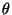 (theta) stands for a parameter, (it is no harm to think of this as either  or
or
 ), then
), then  will stand for an estimator for . Any particular value of an estimator is
called a point estimate for the corresponding parameter.
will stand for an estimator for . Any particular value of an estimator is
called a point estimate for the corresponding parameter.
In general, in statistics we do not use point estimates. There is no confidence in a point estimate and in most cases the probability that a point estimate is correct is zero. Rather interval estimates are used. Interval estimates are ranges of numbers which hopefully contain the parameter we are trying to estimate. For example if we are trying to estimate the mean completion time for the surgical procedure of the last section, 151 minutes would be a point estimate. A typical interval estimate might be 143 to 159 minutes. In most cases we use a special type of interval estimate called a confidence interval estimate or confidence interval. We will give a formal definition below but roughly a confidence interval estimate for a parameter is an interval estimate with a confidence level attached. The confidence level gives the probability that the parameter being estimated actually falls within the interval.
EXAMPLE Suppose that a 95% confidence interval for the mean completion time of the surgical procedure is given by 143 minutes to 159 minutes. This is interpreted in the following manner. The true mean completion time is a number. There is a 95% probability that it falls in the interval 143 to 159.
Notice that in using a confidence interval estimate there are two concepts of how good this estimate is, confidence and accuracy. The confidence of the estimate is given by the confidence level while the accuracy is given by the width of the interval. A narrow interval indicates greater accuracy than a wider interval. On an intuitive level it is clear that these two ideas are inversely related, that is for fixed sample size raising the confidence lowers the accuracy and vice versa. We will see this computationally in section 5.4. However we note that if we want a given confidence and wish to improve the accuracy we must take a larger sample size. In the real world this translates into cost and often the sample size chosen is a compromise between what the theory requires and what the budget of the study dictates.
If is a parameter for a population  and
and  is an estimator for it, then as one goes
from random sample to random sample from
is an estimator for it, then as one goes
from random sample to random sample from  the values of
the values of  will vary. Hence
will vary. Hence  has its own
distribution of values over all possible samples taken from
has its own
distribution of values over all possible samples taken from  (we assume here the same
sample size in each case). This is called the sampling distribution of the
estimator
(we assume here the same
sample size in each case). This is called the sampling distribution of the
estimator  . Hence for a given sample size
. Hence for a given sample size  and a given population
and a given population  with mean there
will be a sampling distribution for
with mean there
will be a sampling distribution for  , consisting of all possible sample means of
samples of size
, consisting of all possible sample means of
samples of size  drawn from
drawn from  . Similarly there will be a sampling distribution
for the sample standard deviation and a sampling distribution for the sample proportion
. Similarly there will be a sampling distribution
for the sample standard deviation and a sampling distribution for the sample proportion
 . The sampling distribution of an estimator
. The sampling distribution of an estimator  will have its own mean and own standard
deviation. We will denote these by 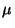 and
will have its own mean and own standard
deviation. We will denote these by 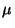 and
 .
.
If
 , that is the mean of the sampling distribution is equal to the
parameter it is supposed to estimate, then
, that is the mean of the sampling distribution is equal to the
parameter it is supposed to estimate, then  is called an unbiased estimator for
. In general
is called an unbiased estimator for
. In general
 is called the standard error of the estimator.
is called the standard error of the estimator.
We examine these ideas relative to sample means.
For any population with mean and standard deviation  the sample mean
the sample mean  is an
unbiased estimator for . This means that
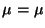 where is
the mean of the sampling distribution of
is an
unbiased estimator for . This means that
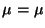 where is
the mean of the sampling distribution of  . Further the standard error of the mean is
given by
. Further the standard error of the mean is
given by
EXAMPLE
Suppose the discussed surgical procedure has a mean of  and a
standard deviation of
and a
standard deviation of
 . What is the mean and standard deviation of the sampling
distribution of
. What is the mean and standard deviation of the sampling
distribution of  for samples of size 25.
for samples of size 25.
The mean of the sampling distribution is the same as the original mean. Therefore
 . The standard deviation of the sampling distribution or the standard error is the
original standard deviation divided by the squareroot of the sample size. Therefore
. The standard deviation of the sampling distribution or the standard error is the
original standard deviation divided by the squareroot of the sample size. Therefore
The idea of an estimator and its sampling distribution is used to give a formal definition of a
confidence interval. Suppose  is an estimator for and
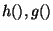 are
functions of
is an estimator for and
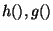 are
functions of  with
with
 for all values of
for all values of  . Then
. Then
 forms
a random interval, that is an interval of numbers which arises randomly. If for some
value
forms
a random interval, that is an interval of numbers which arises randomly. If for some
value  we have that
we have that
Summarizing all this we have that an
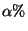-confidence interval for a paramter
is a random interval
 , where
, where  is an estimator of and
are functions of
is an estimator of and
are functions of  such that
such that
We now look at the particular case where the parameter of interest is the population variance
 and the estimator is the sample variance 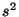. Estimating the variance
and the estimator is the sample variance 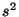. Estimating the variance  is
equivalent to estimating the standard deviation
is
equivalent to estimating the standard deviation  . As with the estimation procedures for
population means the procedures used with variances are separated into small and large sample
procedures.
. As with the estimation procedures for
population means the procedures used with variances are separated into small and large sample
procedures.
Crucial to estiamtion procedures for variances is the chi-square distribution. If  is a
positive integer a chi-square distribution with n degrees of freedom is a continuous
distribution whose density curve has the equation
is a
positive integer a chi-square distribution with n degrees of freedom is a continuous
distribution whose density curve has the equation
There are tabled values listed for the chi-square distribution
which put given percentages in the tails for given degrees of freedom. Thus a tail entry given by
 is the value which puts in the right hand tail for a
chi-square distribution with
is the value which puts in the right hand tail for a
chi-square distribution with  degrees of freedom. For example the value for
degrees of freedom. For example the value for
 . This indicates that for a chi-square distribution with 8 d.f. the value 17.535 has 2.5% to
the right of it. In MAGNUSSTAT the appropriate chi-square values for estimation are computed
automatically.
. This indicates that for a chi-square distribution with 8 d.f. the value 17.535 has 2.5% to
the right of it. In MAGNUSSTAT the appropriate chi-square values for estimation are computed
automatically.
The chi-square distribution plays a role in the estimation of standard deviations through the following fundamental result.
Sampling Distribution of If is the sample variance based on  observations from a normal population with standard deviation
observations from a normal population with standard deviation  then
then

Notice that this result is in terms of the variances. However estimating variances is
equivalent to estimating standard deviations. Using this result we can derive a confidence interval for  and hence for
and hence for  when sampling is done from a normal
population.
when sampling is done from a normal
population.
For a given  , find the chi-square values
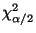 and
, find the chi-square values
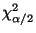 and
 so
that for a chi square distribution with the given degrees of freedom 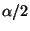% is in the right
hand tail and % is in the left hand tail. The reason we need two different values is that
the chi-square distribution is not symmetrical. We indicate this is figure 1.
so
that for a chi square distribution with the given degrees of freedom 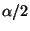% is in the right
hand tail and % is in the left hand tail. The reason we need two different values is that
the chi-square distribution is not symmetrical. We indicate this is figure 1.
From the chi-square distribution and the way we chose the chi-square values we have the following
inequality on chi-square values occurring  % of the time
% of the time


The inequality in (2) defines a random interval containing  which must occur
which must occur  %
of the time and thus defines an
%
of the time and thus defines an  -percent confidence interval for
-percent confidence interval for  . Particular
values for the variables will give a confidence interval estimate. Taking the square root of these
values will give a confidence interval for
. Particular
values for the variables will give a confidence interval estimate. Taking the square root of these
values will give a confidence interval for  .
.
Confidence Intervals for  If
If  is a normal population with standard
deviation
is a normal population with standard
deviation  then an
then an  % confidence interval for
% confidence interval for  is given by
is given by
EXAMPLE A study was done to determine the mean time to toleration of solid food after a stomach surgery. A random sample of 16 patients had a sample mean of 6.2 days with a sample standard deviation of 1.2 days. Determine a 95% confidence interval estimate for the standard deviation of time.
Here  Assuming that the time follows a
normal distribution we can apply the above results. First we must find the 95%
chi-square confidence coefficients. Since a 95% interval will leave a total of 5% in the tails
there is 2.5% in each tail. There are 16 observations so 15 d.f. Therefore the appropriate
chi-square confidence coefficients are
Assuming that the time follows a
normal distribution we can apply the above results. First we must find the 95%
chi-square confidence coefficients. Since a 95% interval will leave a total of 5% in the tails
there is 2.5% in each tail. There are 16 observations so 15 d.f. Therefore the appropriate
chi-square confidence coefficients are
The remaining computed information is that  Therefore the confidence interval estimate is
Therefore the confidence interval estimate is

Therefore a 95% confidence interval for the standard deviation of time to tolerate solid food is .887 days to 1.857 days.
There is a central limit theorem for the chi-square distribution from which a large sample
confidence interval for  can be derived. For large sample sizes
can be derived. For large sample sizes  from a normal
distribution we obtain the following:
from a normal
distribution we obtain the following:
Large Sample Sampling Distribution of If is the sample standard deviation based on
 observations from a normal population with standard deviation
observations from a normal population with standard deviation  then for large
then for large 
Using this we can derive a large sample confidence interval for  using confidence
coefficients from the normal distribution.
using confidence
coefficients from the normal distribution.
Large Sample Confidence Intervals for  If
If  is a normal population with
standard deviation
is a normal population with
standard deviation  then a large sample
then a large sample  % confidence interval for
% confidence interval for  is
given by
is
given by
EXAMPLE Suppose in the toleration of solid food study there was a random sample of 60 patients an there was a standard deviation of 1.2 days. Determine a 95% confidence interval for the population standard devaition.
Here 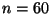, so assuming that the time
follows a normal distribution we can apply the large sample results. We have
 and
an appropriate 95% normal confidence coefficient is 1.96. Therefore the computed confidence
interval estimate is
and
an appropriate 95% normal confidence coefficient is 1.96. Therefore the computed confidence
interval estimate is
Therefore a 95% confidence interval for the standard deviation of time to tolerate solid food is 1.018 days to 1.461 days.
Notice that this is a more accurate estimate than the one derived in the first example as to be expected, since a larger sample size was used.
In that estimation theory we considered sampling from a population and then estimating parameter values from the computed sample information. We now discuss statistical testing or hypothesis testing. Much of the theoretical framework is the same as in estimation theory but the viewpoint is different. In hypothesis testing we begin with a claim or hypothesis about a population parameter and then test this claim by looking at sample information.
Suppose that standard guidelines say that the average time to complete a certain surgical procedure is 2 hours or 120 minutes. We take the claim of an average of 120 minutes as a hypothesis about the true population mean and we wish to test whether this is correct or not. Suppose further that a random sample of 25 of these surgical procedures had an average (sample average) completion time of 151 minutes. Then the observed evidence is that it actually takes longer than 120 minutes on average. Of course the difference between the theoretical avergae of 120 minutes and the observed value of 151 minutes may be soley due to random variation. If we use the computed sample mean of 151 minutes as evidence that either the claim that the population mean is 120 is correct or that the claim is too low this is an example of a hypothesis testing procedure. Essentially here we are looking at whether the observed value, 151 minutes, is far enough away from the hypothesized mean of 120 minutes to be evidence that 120 is too low. The criteria used to determine in a scientific manner whether it is far enough away will be discussed below.
What is crucial in statistical hypothesis testing is that the general procedure is not to prove the hypothesis but rather to attempt to disprove the hypothesis. For this reason the hypotheses that we test in statistics are called null hypotheses because we are trying to null them or negate them. If we cannot null them or negate them we accept them. Null hypotheses are denoted by 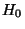 and generally have the form
In the example involving the surgical procedure time the parameter being tested is the population mean and the claim is that this mean is 120 minutes. Therefore for this test the null hypothesis is
EXAMPLE 6
Suppose we consider two different hospitals A and B and we wish to determine if the average per
patient cost for a given procedure is the same in both hospitals. If we let 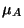 be the average
per patient cost in hospital A and  be the average
per patient cost in hospital B then the parameter being testing is
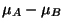 the difference
of the two means. The appropriate null hypothesis is then
be the average
per patient cost in hospital B then the parameter being testing is
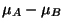 the difference
of the two means. The appropriate null hypothesis is then
To actually test a given null hypothesis we roughly proceed as follows: for an estimator
statistic  for we have a cutoff value
for we have a cutoff value  . If
. If  we reject the null hypothesis
while otherwise we accept it. Which estimator statistic to use, how the value of
we reject the null hypothesis
while otherwise we accept it. Which estimator statistic to use, how the value of  is determined
and how to actually carry out the analysis we will now discuss.
is determined
and how to actually carry out the analysis we will now discuss.
In testing a null hypothesis
 the idea is to attempt to disprove it or
reject it. We must therefore have an alternative hypothesis, which we denote by 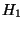 to
accept if we do reject . The alternative hypothesis can have one of three possible forms:
the idea is to attempt to disprove it or
reject it. We must therefore have an alternative hypothesis, which we denote by 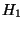 to
accept if we do reject . The alternative hypothesis can have one of three possible forms:
EXAMPLE
In the test of surgical time we had the null hypothesis
Once a null hypothesis and alternative hypothesis are chosen we have the following schematic situation (figure 1) which contains all the relevant information about statistical testing.
A type 1 error is the error of rejecting a null hypothesis when it is really true. Here we
randomly get a sample which refutes the null hypothesis even though the null hypothesis is true. The
probability or risk of committing a type 1 error is called the level of significance or
 -error (alpha error).
A type 2 error is the error of accepting a null hypothesis when it is really false. Here we
randomly obtain a sample which backs up the null hypothesis even though the null hypothesis is
false. The probability or risk of committing a type 1 error is called the
-error (alpha error).
A type 2 error is the error of accepting a null hypothesis when it is really false. Here we
randomly obtain a sample which backs up the null hypothesis even though the null hypothesis is
false. The probability or risk of committing a type 1 error is called the
 -error (beta error). It is also called the
operating characteristic value. The probability of not committing a type 2 error {the lower
right hand box} is
-error (beta error). It is also called the
operating characteristic value. The probability of not committing a type 2 error {the lower
right hand box} is  and is called the power of the test. If there are two possible
tests for a hypothesis the more powerful test is the one with the higher power. The values of
and is called the power of the test. If there are two possible
tests for a hypothesis the more powerful test is the one with the higher power. The values of
 and
and  are inversely related for a fixed sample size. That is if there is a small
are inversely related for a fixed sample size. That is if there is a small
 , that is a small chance of making a type 1 error, there may be a larger
, that is a small chance of making a type 1 error, there may be a larger  , or a
larger chance of making a type 2 error. If we wish to maintain a small
, or a
larger chance of making a type 2 error. If we wish to maintain a small  and have a smaller
and have a smaller
 we must take a larger sample size. The relationship between
we must take a larger sample size. The relationship between  and
and  is
analogous to the relationship between confidence and accuracy in an estimation procedure.
is
analogous to the relationship between confidence and accuracy in an estimation procedure.
In setting up a criterion for accepting or rejecting a null hypothesis we attempt to set the level of significance at a predetermined small value. In most practical testing this value is either 1% or 5% although any value can be used. For example if a test is conducted at a 5% level of significance this means that there is only a 5% chance of rejecting the null hypothesis if it is really true.
There is a nice analogy between the hypothesis testing framework and the framework of the criminal justice system in the United States. When a defendant goes into court the presumption is innocent until proven guilty. The burden of proof is all on the prosecution. Hence the defendants innocence is a null hypothesis while the alternative is the defendant's guilt. Therefore we have

Hence in this legal analogy the  -error is convicting an inncoent defendant while the
-error is convicting an inncoent defendant while the
 -error is letting a guilty defendant go free. Historically the American legal system has
been geared to making
-error is letting a guilty defendant go free. Historically the American legal system has
been geared to making  as small as possible. What must be realized is that this follows
the above theoretical model so that
as small as possible. What must be realized is that this follows
the above theoretical model so that  and
and  are inversely related. In practical terms
this means that anything that is done to make it harder to convict an innocent person will
increase the probability of letting a guilty person go free. Conversely anything done to make it
harder for a guilty person to go free will increase the probability of convicting an innocent
person.
are inversely related. In practical terms
this means that anything that is done to make it harder to convict an innocent person will
increase the probability of letting a guilty person go free. Conversely anything done to make it
harder for a guilty person to go free will increase the probability of convicting an innocent
person.
For any statistical hypothesis test there is a five step procedure that is always followed. What will differ in this procedure in going from test to test is the type of test statistic used and the determination of critical regions. We will go over this procedure, do some examples and then in the rest of the chapter go over the particular types of tests most relevant to nursing and medical practice.
The first step in the testing procedure is to formulate the null hypothesis . As
explained in section 6.1 this will usually have the form
 where is a
parameter and is a particular value. Recall that we are not trying to prove this null
hypothesis but rather to disprove it or reject it. If we cannot reject it it will be accepted.
where is a
parameter and is a particular value. Recall that we are not trying to prove this null
hypothesis but rather to disprove it or reject it. If we cannot reject it it will be accepted.
The second step in the testing procedure is to formulate the alternative hypothesis which will be accepted if the null hypothesis is rejected. As explained in the last section the alternative hypothesis can have one of three possible forms:
The third step in the testing procedure is to choose three things: a level of significance, a sample size and an appropriate test statistic.
The level of significance is the probability of making a type 1 error, that is the probability of rejecting the null hypothesis when it is true. It is chosen to be a small number, usually 1% or 5%, although any value can be used. If we reject at 1% value then we are 99% confident that we made the right decision.
The appropriate test statistic is a statistic whose sampling distribution depends upon the parameter being tested. We wish to find the cutoff value so that the probability of the observed value of the test statistic is low (less than the level of significance) if the null hypothesis is false. How we arrive at appropriate test statistics will be discussed in subsequent sections.
The fourth step in the testing procedure is to determine a rejection region or critical region. This region will serve as the cutoff for accepting or rejecting the null hypothesis. If the observed value of the test statistic falls in the rejection region the null hypothesis will be rejectedd. If the observed value of the test statistic doesn't fall in the rejection region then the null hypothesis will be accepted. The determination of the critical region will be based on the level of significance and the sampling distribution of the test statistic and will be determined so that the probability of a value of the test statistic falling the critical region is less than the level of significance. Again we will see how this is done for specific test statistics in subsequent sections.
The fifth step and final step in the testing procedure is to obtain sample results and a value for the test statistic. If the test results are in the rejection region the results are said to be statistically significant and the null hypothesis is rejected in favor of the alternative . If the test results are not in the rejection region then we say the results are not statistically significant and the null hypothesis is accepted. Thus significant results lead to rejection of the null hypothesis while not significant results lead to acceptance of the null hypothesis.
Another concept is important relative to this fifth step. The P-value of the test results is
the probability of obtaining a value of the test statistic more unusual that what was obtained,
assuming the null hypothesis is true. If there is a level of significance  , then being in the
rejection region is equivalent to having a P-value less than
, then being in the
rejection region is equivalent to having a P-value less than  . Hence the null hypothesis is
rejected whenever the P-value is less than the given level of significance. Therefore we have the
following two equivalent rejection criteria:
. Hence the null hypothesis is
rejected whenever the P-value is less than the given level of significance. Therefore we have the
following two equivalent rejection criteria:
(1) The value of the test statistic falls in the rejection region
(2) The P-value of the test results are lower than the level of significance
 .
.
The second criteria is important to note since many computer programs print the P-values. In using
these programs the rejection regions don't have to be determined - just the computed P-values
compared with the given  .
.
.
.
We now summarize the five step procedure and then do several examples.
STEP ONE: Formulate the null hypothesis:
STEP TWO: Formulate the alternative hypothesis:
STEP THREE: Choose a level of significance  , a sample size
, a sample size
 and an appropriate test statistic.
and an appropriate test statistic.
STEP FOUR: Based on the sampling distribution of the test statistic and the chosen level of significance determine a rejection region or critical region. The values not in the rejection region are called the acceptance region.
STEP FIVE: Obtain test results and a value for the test statistic.
 (a) If the test results are in the rejection region the results are
said to be statistically significant and the null hypothesis is rejected in favor of the
alternative . This is equivalent to the P-value of the test results being lower than the level
of significance.
(a) If the test results are in the rejection region the results are
said to be statistically significant and the null hypothesis is rejected in favor of the
alternative . This is equivalent to the P-value of the test results being lower than the level
of significance.
 (b)If the test results are not in the rejection region then we say the results are
not statistically significant and the null hypothesis is accepted. This is equivalent
to the P-value of the results being higher than the level of significance.
(b)If the test results are not in the rejection region then we say the results are
not statistically significant and the null hypothesis is accepted. This is equivalent
to the P-value of the results being higher than the level of significance.
EXAMPLE
It is claimed that the average production time for a certain
produced item is 26 minutes. There is some evidence that it actually takes longer. To test the
claim, 64 items were sampled. A sample average production time of 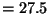 minutes with a
standard deviation of  minutes was computed. Is this enough evidence at a 5% level of
significance to reject the claim.
minutes was computed. Is this enough evidence at a 5% level of
significance to reject the claim.
Here the null hypothesis is 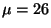 matching the claim. We are interested in the fact that it
actually takes longer so the alternative is  . This is a one-sided alternative. Hence we
have
. This is a one-sided alternative. Hence we
have
The sample size is  while the chosen level of significance is
while the chosen level of significance is
 . An
appropriate test statistic for testing hypotheses concenring means (see section 6.5) is
. An
appropriate test statistic for testing hypotheses concenring means (see section 6.5) is
In figure 3 we see a normal distribution with a supposed mean of . This corresponds
to a z-value of  . Given the alternative
. Given the alternative  it is clear that high values of the mean
will lead to rejection. The 5% level tells us how high - only the highest 5% will lead to
rejection. From the standard normal table we find (as in chapter four) that a z-value of
it is clear that high values of the mean
will lead to rejection. The 5% level tells us how high - only the highest 5% will lead to
rejection. From the standard normal table we find (as in chapter four) that a z-value of  cuts off the highest 5%. This is called the critical z-value, which we denote by
cuts off the highest 5%. This is called the critical z-value, which we denote by  . Here
then i
. Here
then i
 . This is the cutoff above which there will be rejection. Notice that since the
alternative is one-sided only one tail of the normal curve leads to rejection. Tests like this are
then called one-tailed tests. If both tails led to rejection it would be called a two-tailed test.
. This is the cutoff above which there will be rejection. Notice that since the
alternative is one-sided only one tail of the normal curve leads to rejection. Tests like this are
then called one-tailed tests. If both tails led to rejection it would be called a two-tailed test.
The sample results are:
The results would be reported in the following manner.
At a 5% level the result were significant. Therefore the null hypothesis that the mean was 26 is
rejected in favor of the alternative that the mean is greater than 26.
From A normal table we see that there is a probability of only .0037 of obtaining a z-value of
over 2.67. Hence the P-value of the above test results is .0037. This is below
 .
Again using the P-value criterion the null hypothesis would be rejected since the P-value is lower
than the chosen level.
.
Again using the P-value criterion the null hypothesis would be rejected since the P-value is lower
than the chosen level.
It should be clear from this example that the testing procedure is rather straightforward once an appropriate test statistic and its sampling distribution is known. Therefore what must be done now is to describe the important testing situations together with the appropriate corresponding test statistics.
In most practical testing situations there are three population parameters that may be of interest: means, standard deviations and proportions. Hypotheses on these parameters can be tested in several different ways.
In a one-sample test, the value of the parameter is tested against some predetermined standard or target value. The sample results in a single sample are used to either accept of reject that standard. Both examples in the previous section were one sample tests.
In a two-sample test, independent samples from two different populations are used to determine comparisons between the parameters of the two populations. For example in comparing whether the completion time of two surgical procedures differs between hospital A and hospital B independent samples would be drawn from each and then compared.
In multiple sample tests parameters from many different populations are tested in one test.
Therefore there are nine basic situations which the statistical analyst must be acquainted with: one sample, two sample and multiple sample for means; one sample, two sample and multiple sample for standard deviations; and one sample, two sample and multiple sample for proportions. Within each of these nine basic situations testing may differ depending on whether large or small samples are drawn. The analyst must be acquainted with this also. The chart in figure 4 gives an overview picture of this parametric testing.
Tests of means are generally called t-tests because they use the t-distribution Multiple sample tests of means fall into what are called analysis of variance or ANOVA procedures. One sample tests of standard deviations use the chi-square distribution while two sample and multiple sample tests for standard deviations use the F-distribution and are called F-tests. One and two sample tests of proportions are called p-tests and are usually based on the normal distribution. Multiple sample tests use the chi-square distribution and will be discussed in the next chapter. Multiple sample procedures can also be used for two sample testing.
The variation of a population or a data set is crucial to understanding research results. Therefore it is often quite important to test questions about variances and standard deviations. In doing such tests we generally assume that the parent population is normal. Test results concerning variances are equivalent to tests concerning standard deviations.
For a one variable data set, representing a single population, null hypotheses are of the form
An appropriate test statistic for dealing with (1) is

EXAMPLE
A filling machine is supposed to have a variance of .01 liters. A random sample of 16 fills showed a sample variance of .014 liters. Is this significant at a 5% level that the variance is too large.
The null and alternative hypotheses are

There is a large sample technique that can be employed also with tests of variances for a one
variable data set. If the sample size is large ( ) then
) then
EXAMPLE
Suppose that in the filling machine of the first example, which is supposed to have a variance of .01 liters, a random sample of 100 fills showed a sample variance of .014 liters. Is this significant at a 5% level that the variance is too large.
The null and alternative hypotheses are
The significance in this second case points out that tests are more powerful for larger sample sizes.
Note that in conducting these tests using MAGNUSSTAT the P-values will be computed automatically and the appropriate decision ( accept or reject) based on the user defined level of significance will be presented in the output box.
;''